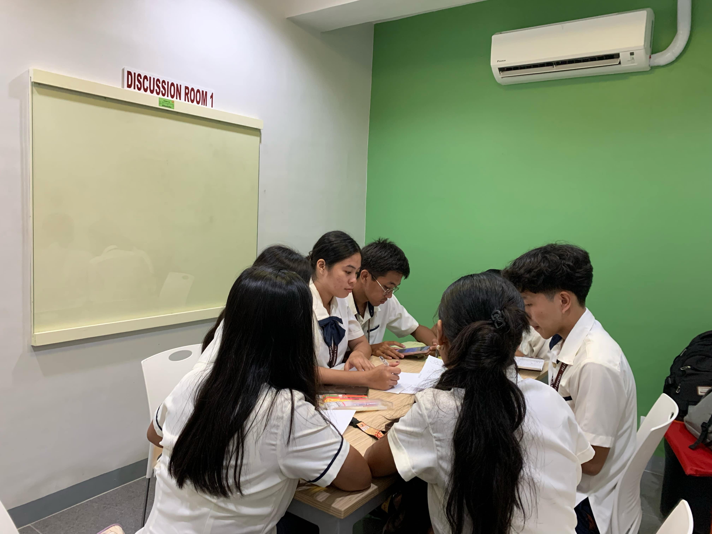
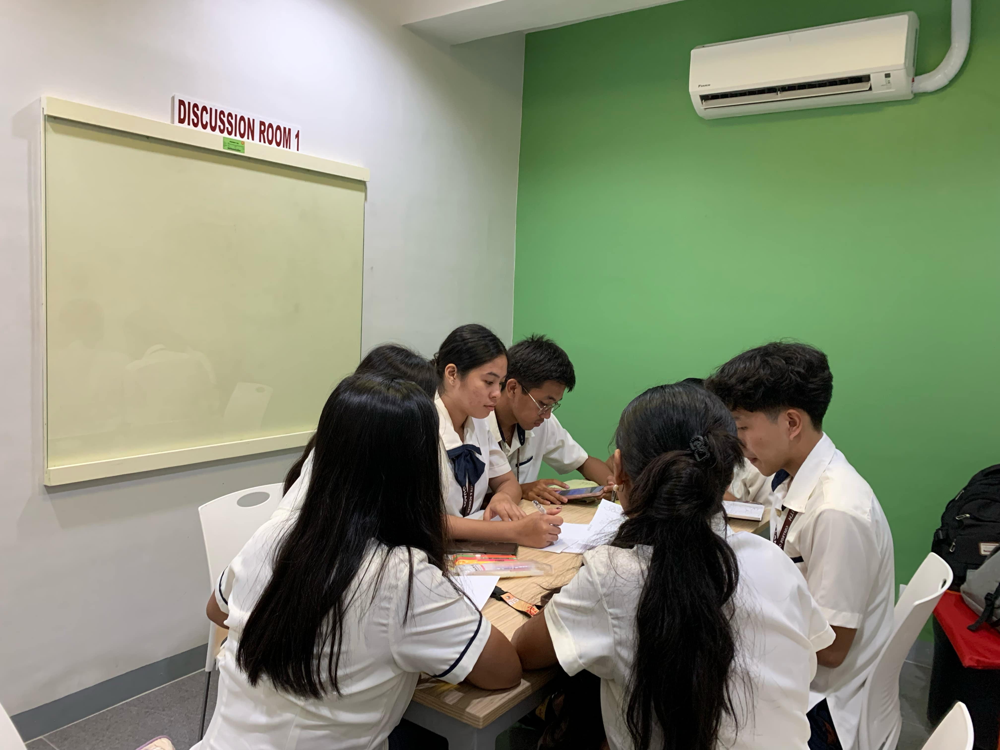

The Research & Learning Hub 1 and Hub 2 (commonly referred to as the Discussion Room) is available for group study and academic-related meetings.
 

Research & Learning Hub 1 and 2, commonly known as the Discussion Room, is located near the Online Resource Center (ORC).